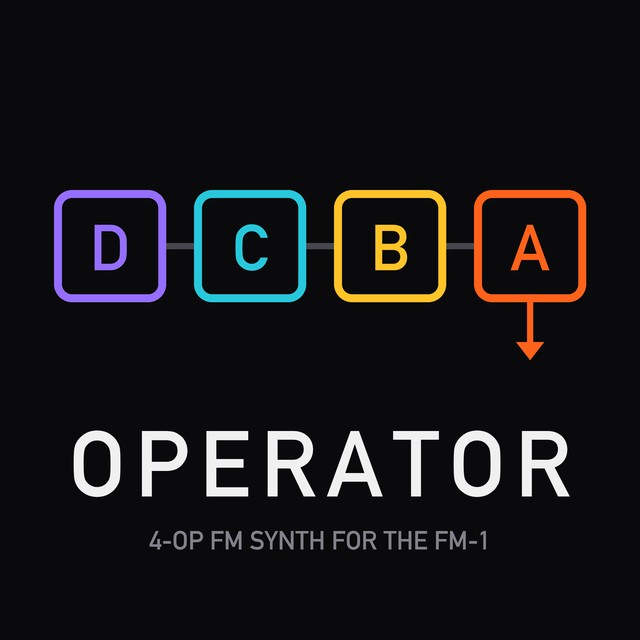

OPERATOR
Firmware installer for the M-VAVE FM-1
OPERATOR turns the FM-1 into a polyphonic FM synth inspired by Ableton Live's Operator: four sine operators, eleven algorithms, an envelope for every operator and 16 presets.
At your own risk
Installing custom firmware is at your own risk.
OPERATOR is unofficial firmware, provided as is, without any warranty. It is not made, endorsed or supported by M-VAVE. A failed or interrupted install can leave the FM-1 unable to start until it is recovered with a USB tool. You can return to the official firmware at any time (below).
Before you install
- Charge the FM-1: it runs on its battery while writing.
- Plug the cable straight into the computer, no hub. It must be a data cable.
- Close apps that use MIDI: DAWs, M-UPGRADE, editors.
- Keep the computer awake (the page asks for that itself) and leave the cable alone until it says Done.
- Use Chrome or Edge: Safari and Firefox have no Web MIDI with SysEx.
Firmware
Detailed log
If something goes wrong
The write stopped: reconnect the FM-1 and press Install again. It stays in update mode until the write is finished.
The firmware does not start: after two failed boots in a row the FM-1 opens USB RESCUE by itself (or switch it on holding OCT−). The installer works there too.
If power is lost mid-write, the FM-1 may stay dark with no USB device: charge it before installing.
Recovering an FM-1 that does not start: MvaveFM1Unbricker
Back to the official firmware
Writes M-VAVE's FM-1 V15 the same way. Only the unmodified official file is accepted: its SHA-256 is checked before writing, and the file never leaves your browser.
Download FM-1 V15 (Downloads → PC Firmware): m-vave.com/download
Licences
OPERATOR is free software under the GNU General Public License v3.0 only, provided without any warranty. Complete source code of this version.
- OPERATOR, and the Felucca platform it is built on (Leo Kuroshita, Hügelton Instruments; through ORBIT and SLOOP): GPL-3.0-only, licence text
- Terminus font by Dimitar Toshkov Zhekov: SIL Open Font License 1.1, licence text
- IBM Plex Sans font by IBM Corp.: SIL Open Font License 1.1, licence text
- Three JieLi AC79 SDK files in every package (JieLi Technology, unmodified): Apache-2.0, licence text
Details: LICENSING.md · checksums: SHA256SUMS